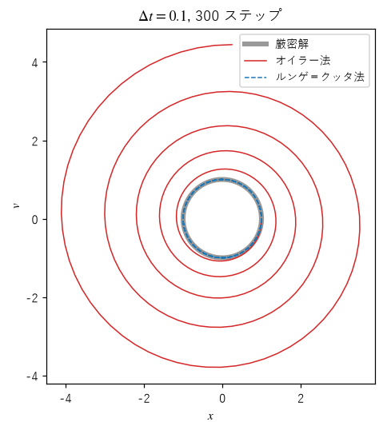
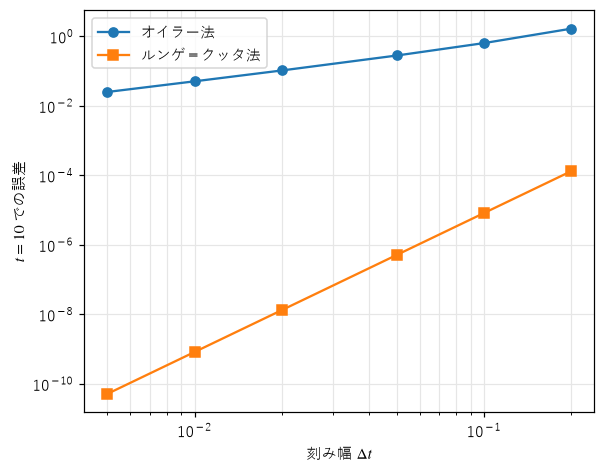
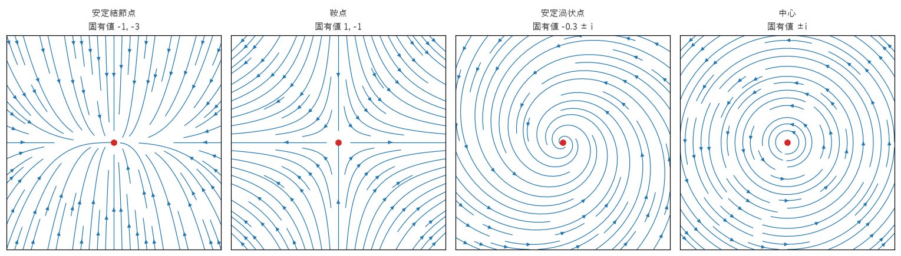
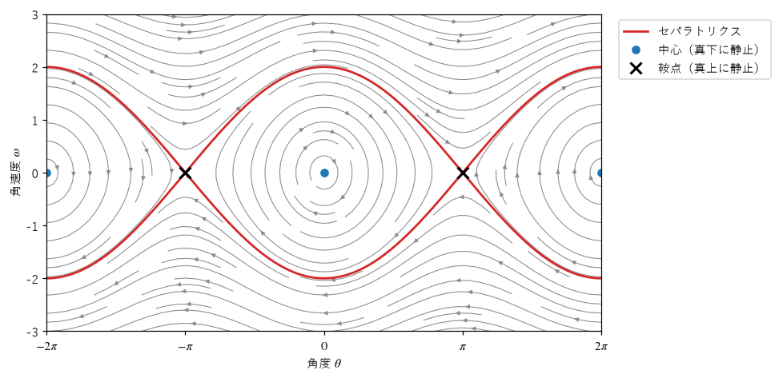
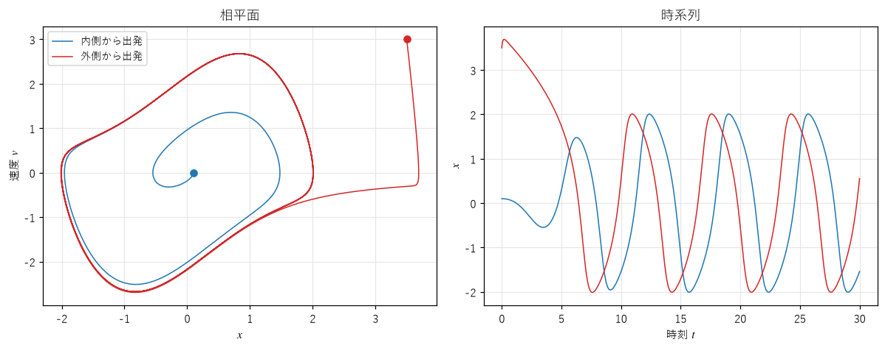

第 3 章 微分方程式と相空間
この章では、連続時間の力学系 \(\dot{x} = F(x)\) を扱う。まず、微分方程式をコンピュータで解く方法（数値解法）を説明し、本書の以降の章で使う共通モジュールを作る。次に、2 次元の系の相平面を描き、平衡点の種類を分類する。最後に、2 次元の連続時間の系ではカオスが起きないという重要な結果を紹介する。
微分方程式を数値的に解く
オイラー法
微分方程式 \(\dot{x} = F(x)\) は、「今の状態 \(x\) での変化の速さは \(F(x)\) である」と言っている。短い時間 \(\Delta t\) の間、この速さが変わらないと仮定すると、
となる。これを繰り返して軌道を求める方法をオイラー法（Euler method）という。オイラー法は、微分方程式を写像 \(x_{k+1} = x_k + \Delta t\,F(x_k)\) に置き換えたものといえる。
オイラー法は分かりやすいが、精度が低い。1 ステップの誤差は \(\Delta t^2\) に比例し、一定の時間 \(T\) まで計算するには \(T/\Delta t\) ステップが必要なので、時刻 \(T\) での誤差（大域誤差）は \(\Delta t\) に比例する。刻み幅を半分にしても、誤差は半分にしかならない。
ルンゲ＝クッタ法
4 次のルンゲ＝クッタ法（Runge–Kutta method、RK4）は、1 ステップの中で 4 か所の傾きを計算し、重み付きの平均で進む方法である。
\(k_1\) は区間の始点、\(k_2\) と \(k_3\) は中点、\(k_4\) は終点での傾きの推定値である。大域誤差は \(\Delta t^4\) に比例するので、刻み幅を半分にすると誤差は約 1/16 になる。1 ステップあたり \(F\) を 4 回計算する必要があるが、同じ精度を得るための計算量は、オイラー法よりはるかに少ない。
本書では、オイラー法と RK4 を共通モジュール ode.py にまとめ、以降の章のサンプルから使う。
17Vector = NDArray[np.float64]
18VectorField = Callable[[Vector], Vector]
19Stepper = Callable[[VectorField, Vector, float], Vector]
20
21
22def euler_step(f: VectorField, x: Vector, dt: float) -> Vector:
23 """オイラー法: 現在の傾き f(x) のまま dt だけ進む."""
24 return x + dt * f(x)
25
26
27def rk4_step(f: VectorField, x: Vector, dt: float) -> Vector:
28 """4 次のルンゲ＝クッタ法: 区間内の 4 か所の傾きを重み付きで平均して進む."""
29 k1 = f(x)
30 k2 = f(x + 0.5 * dt * k1)
31 k3 = f(x + 0.5 * dt * k2)
32 k4 = f(x + dt * k3)
33 return x + dt / 6.0 * (k1 + 2.0 * k2 + 2.0 * k3 + k4)
34
35
36def integrate(f: VectorField, x0: Vector, dt: float, n: int, step: Stepper = rk4_step) -> Vector:
37 """初期値 x0 から n ステップ進め、x0 を含む n + 1 個の状態を返す.
38
39 戻り値の形は (n + 1,) + x0.shape である。
40 """
41 xs = np.empty((n + 1,) + x0.shape)
42 xs[0] = x0
43 x = x0.astype(np.float64)
44 for i in range(n):
45 x = step(f, x, dt)
46 xs[i + 1] = x
47 return xs
状態 x は NumPy の配列で、最後の軸が状態の成分を表す。形が (1000, 3) の配列を渡すと、1000 個の初期値の軌道を一度に計算できる。NumPy では、Python のループを書くより、配列全体に対する演算（ベクトル化）のほうがはるかに速い。第 10 章の吸引領域の計算などでは、この性質を利用して数万個の初期値を同時に計算する。
精度の比較
2 つの方法の精度を、単振動 \(\ddot{x} = -x\) で比べる。2 階の微分方程式は、速度 \(v = \dot{x}\) を新しい変数として加えると、1 階の連立方程式 \(\dot{x} = v\)、\(\dot{v} = -x\) に書き直せる。初期値 \((x, v) = (1, 0)\) の厳密解は \(x = \cos t\)、\(v = -\sin t\) で、相平面では単位円を描く。


図 8 刻み幅 0.1 で 300 ステップ計算した単振動の軌道


図 9 刻み幅と、時刻 10 での誤差の関係（両対数グラフ）
図 8 では、オイラー法の軌道が外側に渦を巻いて広がっている。エネルギー \(x^2 + v^2\) が保存されるはずの系で、オイラー法は 1 ステップごとにエネルギーを \(1 + \Delta t^2\) 倍に増やしてしまうからである。RK4 の軌道は厳密解とほとんど重なる。図 9 の両対数グラフでは、誤差が直線に並び、その傾きはオイラー法で約 1、RK4 で約 4 である。次の出力は、刻み幅を半分にしたときに誤差が何分の 1 になるかを表しており、それぞれ約 2 と 16 になっている。
dt オイラー法 比 ルンゲ＝クッタ法 比
0.1000 6.460e-01 8.333e-06
0.0500 2.838e-01 2.3 5.208e-07 16.0
0.0250 1.331e-01 2.1 3.255e-08 16.0
0.0125 6.449e-02 2.1 2.035e-09 16.0
刻み幅は小さいほど正確だが、計算時間が増える。本書のサンプルでは、RK4 で刻み幅 0.002〜0.05 程度を使う。第 5 章で見るように、カオス的な系では誤差がいずれ大きくなるので、どれほど精度の高い数値解法を使っても、長時間の軌道を正確に求めることはできない。
相平面とベクトル場
2 次元の系 \(\dot{x} = F(x)\) では、平面上の各点にベクトル \(F(x)\) が決まる。このベクトル場に沿って流れる曲線をいくつも描いた図を相図（phase portrait）という。相図を見ると、個々の軌道を計算しなくても、系の振る舞いの全体像がつかめる。
線形系の平衡点の分類
最も基本的なのは、行列 \(A\) を使って \(\dot{\boldsymbol{x}} = A\boldsymbol{x}\) と書ける線形系（linear system）である。原点は常に平衡点であり、その周りの振る舞いは \(A\) の固有値（eigenvalue）で決まる（固有値については 付録 A を参照）。
固有値 \(\lambda\) と固有ベクトル \(\boldsymbol{v}\) の組（\(A\boldsymbol{v} = \lambda\boldsymbol{v}\)）があると、\(\boldsymbol{x}(t) = e^{\lambda t}\boldsymbol{v}\) は解になる。固有値が実数なら、この解は固有ベクトルの方向に沿って、\(\lambda < 0\) なら原点に近づき、\(\lambda > 0\) なら遠ざかる。固有値が複素数 \(\alpha \pm i\beta\) なら、解は角速度 \(\beta\) で回転しながら、\(e^{\alpha t}\) に比例して大きさを変える。2 次元の系の平衡点は、固有値によって 図 10 と次の表のように分類できる。


図 10 線形系の 4 種類の平衡点の相図
種類 |
固有値 |
軌道の様子 |
|---|---|---|
安定結節点 |
2 つとも負の実数 |
まっすぐ（または曲がりながら）原点に近づく |
不安定結節点 |
2 つとも正の実数 |
原点から遠ざかる |
鞍点 |
正と負の実数が 1 つずつ |
1 方向からは近づき、別の方向へ遠ざかる |
安定渦状点 |
実部が負の複素数 |
渦を巻きながら原点に近づく |
不安定渦状点 |
実部が正の複素数 |
渦を巻きながら原点から遠ざかる |
中心 |
実部が 0 の複素数（純虚数） |
原点の周りを閉じた曲線で回り続ける |
離散時間の写像では、固定点の安定性は微分係数の絶対値が 1 より小さいかどうかで決まった（第 2 章）。連続時間の系では、固有値の実部が負かどうかで決まる。この違いは、連続時間の解 \(e^{\lambda t}\) を時間 \(\Delta t\) ごとに観測すると、写像の係数 \(e^{\lambda \Delta t}\) になり、\(|e^{\lambda \Delta t}| < 1\) と \(\mathrm{Re}\,\lambda < 0\) が同じ条件になることから理解できる。
非線形系の線形化
非線形の系でも、平衡点 \(\boldsymbol{x}^*\) のごく近くでは、\(F\) を 1 次式で近似できる。このとき行列 \(A\) の役割をするのが、\(F\) の各成分を各変数で偏微分した値を並べたヤコビ行列（Jacobian matrix）である。
摩擦のない振り子 \(\dot{\theta} = \omega\)、\(\dot{\omega} = -\sin\theta\) で確かめる。ヤコビ行列は
である。真下に静止した平衡点 \((0, 0)\) では固有値が \(\pm i\) となり、線形化した系は中心になる。真上に静止した平衡点 \((\pi, 0)\) では固有値が \(\pm 1\) となり、鞍点になる。図 11 は振り子の相図である。


図 11 摩擦のない振り子の相図。赤い曲線（セパラトリクス）が、往復する揺れと、回り続ける回転を分ける。
振り子のエネルギー \(E = \omega^2/2 - \cos\theta\) は時間がたっても変わらないので、軌道は \(E\) が一定の曲線に沿う。\(E < 1\) の軌道は中心の周りの閉じた曲線（往復する揺れ）、\(E > 1\) の軌道は上下の波打つ曲線（回り続ける回転）になる。その境目の \(E = 1\) の曲線は鞍点どうしを結び、セパラトリクス（separatrix）と呼ばれる。振り子を真上に向かってちょうどぎりぎりで止まる勢いで押し出すと、軌道はセパラトリクスに乗り、無限の時間をかけて真上に近づく。
なお、線形化で中心と判定された場合は注意が必要である。線形化では無視した高次の項によって、実際の系では渦状点になることがある。摩擦のない振り子では、エネルギーが保存されるので、本当に中心になる。
リミットサイクル
減衰振り子の振動は、摩擦によって必ず止まる。しかし、心臓の拍動、時計の振り子、楽器の弦の自励振動のように、外部からエネルギーを受け取りながら、一定の振幅で振動を続ける系もある。このような振動は、相平面では孤立した閉軌道として現れ、リミットサイクル（limit cycle）と呼ばれる。
真空管の発振回路のモデルとして考案されたファン・デル・ポール振動子（van der Pol oscillator）
は、リミットサイクルを持つ代表的な系である。\(\dot{x}\) の係数 \(-\mu(1 - x^2)\) は、\(|x| < 1\) では負（振動を増幅する「負の摩擦」）、\(|x| > 1\) では正（ふつうの摩擦）になる。そのため、振幅が小さい振動は大きくなり、大きい振動は小さくなって、ちょうど釣り合う振幅に落ち着く。


図 12 ファン・デル・ポール振動子（\(\mu = 1\)）。内側と外側から出発した軌道が、同じリミットサイクルに近づく。
図 12 で、内側から出発した軌道も外側から出発した軌道も、同じ閉曲線に近づいている。リミットサイクルは、周期軌道のアトラクタである。中心の周りの閉軌道（振り子の揺れ）とは違い、初期値によらず同じ振幅と周期の振動が実現する。
2 次元ではカオスは起きない
ここまで見た 2 次元の連続時間の系では、軌道は最終的に平衡点か閉軌道に近づいた（振り子のセパラトリクスのように、鞍点どうしを結ぶ軌道の輪に近づく場合もある）。実は、これは一般に成り立つ。
ポアンカレ＝ベンディクソンの定理（Poincaré–Bendixson theorem）：平面上の（右辺が時間によらない）連続時間の系で、軌道が、平衡点を含まない有界な閉領域にとどまり続けるなら、その軌道は閉軌道であるか、閉軌道に近づく。
直観的な理由は、平面上の軌道は互いに交差できないことにある。微分方程式の解は初期値から一意に決まるので、2 本の軌道が交われば、交点から先の未来が 2 通りになってしまう。平面上で交差せずに有界な領域を動き続けるには、同じ経路をぐるぐる回るか、どこかに落ち着くしかない。
この定理から、連続時間の系でカオスが起きるには、少なくとも 3 次元の状態空間が必要であることが分かる。3 次元では、軌道は交差せずに立体的に巻き付き、複雑な構造を作れる。第 6 章のローレンツ方程式は、その最初の例である。
一方、離散時間の写像では事情が違う。写像の軌道は点列であり、「線が交差しない」という制約がない。第 4 章で見るように、1 次元の写像でもカオスが起きる。ただし、ロジスティック写像のように異なる 2 つの値が同じ 1 つの値に移る（逆写像が一意に決まらない）写像の場合であり、逆にたどれる写像でカオスが起きるには 2 次元以上が必要である。第 6 章のエノン写像は、そのような 2 次元の写像の例である。
まとめ
オイラー法の大域誤差は刻み幅に比例し、4 次のルンゲ＝クッタ法の大域誤差は刻み幅の 4 乗に比例する。
線形系の平衡点は、行列の固有値によって、結節点、鞍点、渦状点、中心などに分類できる。非線形系の平衡点は、ヤコビ行列で線形化して調べる。
リミットサイクルは孤立した閉軌道のアトラクタで、初期値によらない一定の振動を表す。
ポアンカレ＝ベンディクソンの定理により、2 次元の連続時間の系ではカオスは起きない。連続時間の系のカオスには 3 次元以上が必要である。